Mikal Bridges: How Probable Was The Iron Man's Streak During The Season?
By Colin Rondon | June 11, 2026

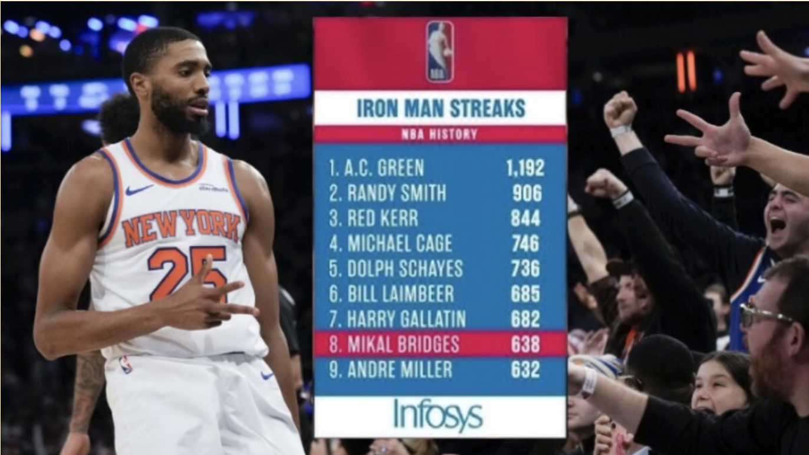
Introduction
Even in the day and age of load management, Mikal Bridges is known for his durability, having never missed a single game in his 8-year NBA career or even his high school and college career. However, his durability was tested last season when he joined the New York Knicks in a trade. Why? Coach Tom Thibodeau. Thibodeau, known for coaching Derrick Rose during his MVP years, and sadly, his career-altering ACL injury year, often relied too much on his starters, tiring them out through a long 82-game season. Aside from Derrick Rose, 5 other notable players were injured for a significant time while playing for him:
- Joakim Noah (Chicago Bulls): During the 2014 playoffs, he was forced to play through plantar fasciitis and knee deterioration he had been facing during the regular season (35.4 minutes per game / MPG), which limited his playing time during the next 2 seasons and prevented him from returning to All-Star form at just age 30.
- Luol Deng (Chicago Bulls): In January 2012, he had a torn wrist ligament that needed surgery, yet he delayed this to play on. Additionally, in 2013 (36.8 MPG), a botched spinal tap for suspected meningitis forced him to sit out the 2013 playoffs. In just his late 20s, he had lost the efficiency and defensive lateral quickness he was known for.
- Zach LaVine (Minnesota Timberwolves): In February 2017, he injured his left ACL and ended up missing the last 35 games of that 2016-17 season (37.2 MPG), plus the first half of the 2017-18 season.
- Jimmy Butler (Minnesota Timberwolves): In February 2018 (36.7 MPG), he tore his right meniscus and missed 6 weeks before returning just before the 2018 playoffs which he helped the Timberwolves reach. Although he’s kept up his all-star play, he has since never played more than 65 games to keep himself healthy for the playoffs.
- Julius Randle (New York Knicks): In January 2024 (35.4 MPG), he dislocated his right shoulder, which he got much-needed surgery for in April, and missed the final 36 games of that regular season plus the full 2024 playoffs.
Nevertheless, even with Bridges being a league leader in minutes per game (MPG) during the 2024-25 regular season (3rd with 37.0 MPG), it was surprising that he kept his streak of consecutive games played. Even with his new head coach Mike Brown being more forgiving, playing him 32.8 MPG this season, his streak still survived. However, I still want to analyze how probable was it throughout the season that he kept his streak?
How Crazy is Mikal Bridges’ Streak of Games Played?
Many don’t understand how outrageous Mikal Bridges’ streak of games played is:
Among the players in the top 10 for consecutive regular season games played at any point in their career, 8 out of 10 of them did not play in the 2000s.
Sources: Wikipedia “List of NBA players with 500 consecutive games played”, Statmuse
| Rank | Name | Consecutive Games | Streak Start | Streak End | MPG During Streak | How Streak Ended |
|---|---|---|---|---|---|---|
| 1 | A.C. Green | 1,192 | November 19, 1986 | April 18, 2001 | 29.3 | Retirement (Never missed a game due to injury) |
| 2 | Randy Smith | 906 | February 18, 1972 | March 13, 1983 | 28.2 | Retirement |
| 3 | Red (Johnny) Kerr | 844 | October 31, 1954 | November 4, 1965 | N/A** | Retirement |
| 4 | Michael Cage | 736 | April 23, 1989 | April 14, 1998 | 24.7 | Hamstring injury |
| 5 | Dolph Schayes^ | 706 | February 17, 1952 | December 26, 1961 | N/A** | Shattered cheek bone |
| 6 | Bill Laimbeer | 685 | October 24, 1980 | January 27, 1989 | 33.0 | Suspension |
| 7 | Harry Gallatin^ | 682 | November 20, 1948 | March 9, 1958 | N/A* | Retirement |
| 8 | Mikal Bridges | 638 | October 17, 2018 | Present | 33.3 | N/A (ongoing) |
| 9 | Andre Miller | 632 | January 26, 2003 | December 5, 2010 | 35.0 | Suspension |
| T-10 | John Stockton^ | 609 | February 13, 1990 | April 20, 1997 | 36.1 | Knee injury |
| T-10 | Jack Twyman^ | 609 | November 5, 1955 | October 29, 1963 | N/A | Broke two bones in his hand |
^has been inducted into the Naismith Memorial Basketball Hall of Fame
*(total minutes not tracked before 1951-1952 season)
**hard to obtain
Nowadays, you rarely see an NBA player stay healthy for 14 years, let alone for an 82-game season. Of the 582 players who logged minutes in the NBA, only 18 of them played all 82 games: that’s only 3% of the NBA!
Even if we lower the threshold to 65 games, the minimum number of games an NBA player needs to play in a season to be eligible for post-season awards, a graph from Thinking Basketball’s video titled “When the solution doesn’t address the problem” shows that only about 31-32% of the NBA played 65 games this season. The last time 50% of the NBA played at least 65 games in a season was around 2016, a decade ago!
All of this just goes to show how impressive Mikal Bridges is ready and present for every NBA game that he can participate in.
Context: Mike Brown and His Teams
Mike Brown, the current head coach of the New York Knicks, has been a head coach for 11 years. The most notable stars that he coached before the Knicks are LeBron James in his early Cleveland Cavaliers days, Kobe Bryant towards the end of his Lakers career, Pau Gasol in the middle of his career, De’Aaron Fox and Domantas Sabonis who led the Sacramento Kings to their first playoff appearance in 16 years. As a head coach, all of the teams that he had coached other than the 2013-14 Cavaliers and the 2023-2025 Sacramento Kings had made the playoffs.
While Mike Brown has coached many wing players, not many are very similar to Mikal Bridges: Bridges is a 2-way player who can be a 3rd option on offense and the 1st or 2nd point-of-attack defender. A few players who may be considered similar to him are past-his-prime Cavaliers Luol Deng, a young Keegan Murray, and one of Bridges’ teammates, OG Anunoby.
Later on in this article, I attempt to build a recurrent neural network model, a Long Short-Term Memory (LSTM) model, to predict if Mikal Bridges’ streak of games played will continue based on several factors. Since Mikal Bridges is a very unique player, I want to compare him to other players playing the same / a similar position who also played a significant amount of minutes per game under coach Mike Brown. However, since the biggest change from last season to this season is his head coach, who controls how many minutes and touches he gets, let’s first look at relevant statistics for players who played under coach Mike Brown:
Statistics About Mike Brown Starters and Comparison to Tom Thibodeau Teams
One way I limited which players to compare to Mikal Bridges is filtering for “starters” by only selecting players who played 25 or more minutes per game in a season.
The histogram below shows how many games Mike Brown starters played in their respective seasons. From this, we can see that:
- 51 out of 62 (~82%) starters played at least 2/3 (~55 games) of the season (red line)
- 42 out of 62 (~68%) starters played at least 65 games of the season (orange line)
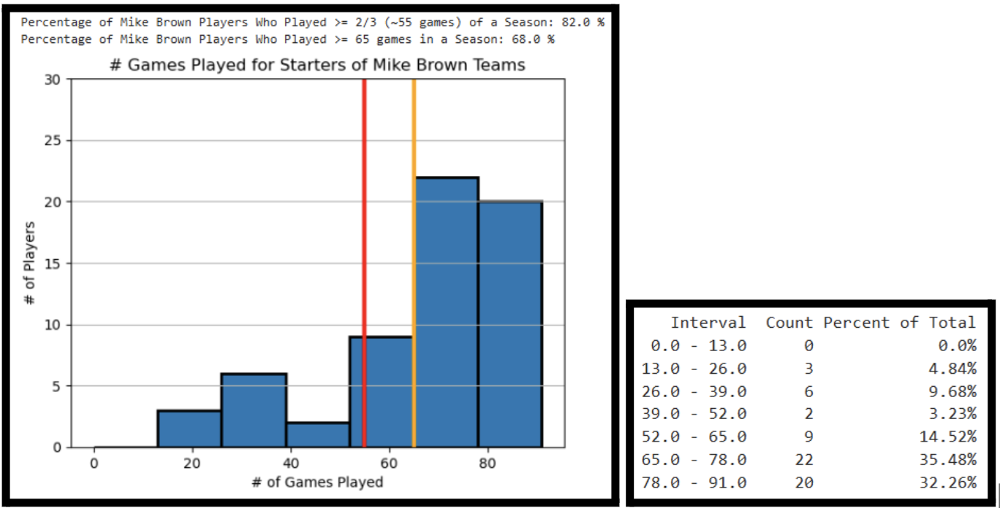
If we compare this to Tom Thibodeau teams with the histogram below, we see the following:
- 51 out of 62 (~82%) starters played at least 2/3 (~55 games) of the season (red line)
- 42 out of 62 (~68%) starters played at least 65 games of the season (green line)
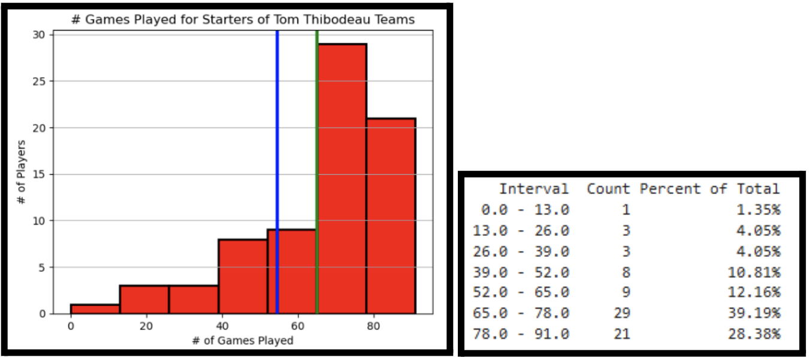
This result is not as surprising as you might think, since his reliance on starters has only affected a certain portion of players. So, both players under Mike Brown and Tom Thibodeau (as head coaches) are generally healthy.
Looking at the dot plots below, we can also see that more than half of Mike Brown’s starters and Tom Thibodeau’s starters played two-thirds or more of their season, even if they play a varying amount of minutes, and even if they don’t have much rest between games, as the next graph shows.
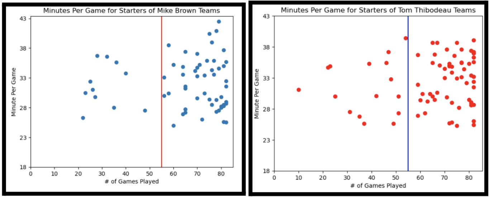
The graphs below shows that neither Mike Brown nor Tom Thibodeau do NOT automatically let players rest more for back-to-backs (0.0 rest days column). These graphs also show other interesting findings:
- The whiskers of the few rest days (0-3, other than 1) for Thibodeau’s players are noticeably taller compared to those for Brown’s players
- Thibodeau’s 0 rest days column has a noticeably dark cluster from the 0 to 5 minutes played range, which Mike Brown’s 0 rest days column does not have, which can imply Thibodeau’s reluctance to give minutes to players deeper on the bench compared to Brown even if the game is the 2nd night of a back-to-back.
- In the 0 rest days column for both charts, there are noticeably darker clusters around the 35 minute mark for the Mike Brown chart and the 40 minute mark for the Thibodeau chart, so this may suggest that both coaches do give a lot of run to certain starters on the 2nd night of back-to-backs, but Thibodeau pushes that group of starters more than Brown does
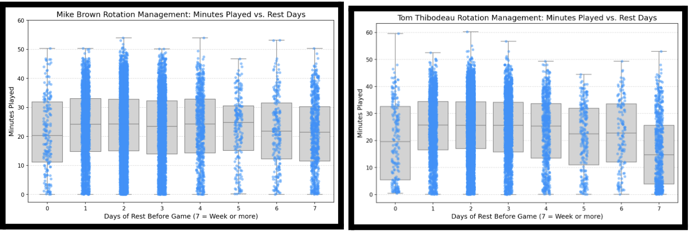
Let’s filter the previous graph for wings, the position of Mikal Bridges:
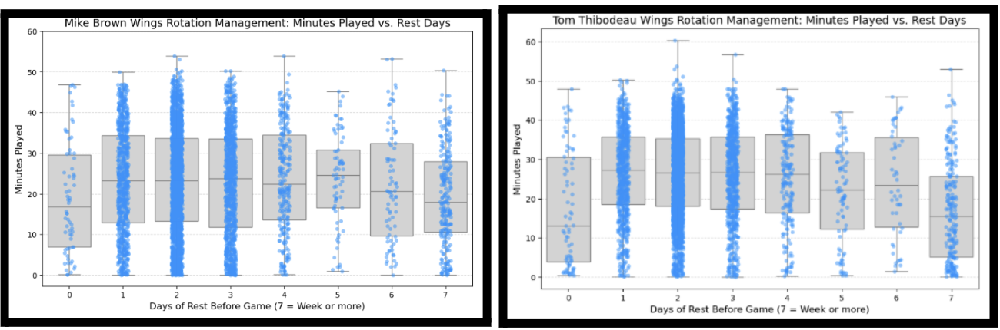
Based on the graphs above, the median number of minutes for Mike Brown players for games with 0, 4, 6 rest days prior is actually higher than that of Tom Thibodeau players, while the inverse is true for games with 1 to 3, 5, and 7 rest days prior.
From all these analyses, although Mike Brown is a more merciful coach than Tom Thibodeau in terms of letting his starters rest more, the difference between them is not as much as casual fans might think based on the discourse around Tom Thibodeau. After all, this year’s New York Knicks team does not have a lot of wings that Mike Brown has trusted, since among the top 20 5-man combinations / lineups they had, 7 do not have O.G. Anunoby (67 games played), 9 do not have Josh Hart (66 games played), and only 3 of them do not have Mikal Bridges:
- 9th (47:08 minutes) - O. Anunoby | M. Bridges | J. Brunson | M. Robinson | L. Shamet
- 10th (45:22 minutes) - O. Anunoby | J. Brunson | J. Hart | L. Shamet | K. Towns
- 19th (33:26 minutes) - J. Brunson | M. Diawara | J. Hart | M. Robinson | L. Shamet
For context, only 3 of Mike Brown’s lineups have surpassed 100 minutes played together:
- 1st (540:45 minutes) - O. Anunoby | M. Bridges | J. Brunson | J. Hart | K. Towns
- 2nd (122:38 minutes) - M. Bridges | J. Brunson | J. Hart | M. McBride | K. Towns (No Anunoby!)
- 3rd (119:29 minutes) - O. Anunoby | M. Bridges | J. Brunson | L. Shamet | K. Towns (No Hart!)
Predicting the Probability of Missing the Next Game
With all of the context and exploration out of the way, let’s talk about what factors the Long Short-Term Memory (LSTM) model, a recurrent neural network, looks at to analyze the probability of a player missing their next game:
- MIN_ROLLING_5: This refers to the rolling average of minutes they play in a 5-game stretch, in order to provide a baseline fatigue measure for the next game with recent context incorporated. Above 33 for even a role player can signify that they have been “stretched” to their limit because two-way wings in my dataset average around 22.7 minutes per game.
- MIN (Minutes Played): This refers to the number of minutes they played in a game, and is used together with MIN_ROLLING_5 to flag any stretch of games with many minutes.
- REST_DAYS: This refers to the number of days a player gets to rest between games. Having less or no rest days before a game can take a toll on a player and risk their physical health.
- FGA (Field Goals Attempted): This refers to the number of shots that a player took in a game, including both misses and makes. This is a good contextual statistic because the physical toll of 30 minutes is different on a spot-up shooter versus a shot creator.
- IS_AWAY (is the away team): This refers to whether a player’s team was playing at an opposing team’s court, with the normal flag of 1 meaning it was an away game, and 0 meaning it was a home game. Because NBA travel schedules can be brutal on a player’s sleep rhythm, this can show another factor that took a physical toll on a player’s health.
IMPORTANT NOTE: To clarify the “Backtest” graphs below, they do present the chance for a player to miss each of the 82 games in an NBA season, and absence risk probabilities above the red threshold line of 15% or up to 20% are values that the line spike up to before an injury or a missed game.
Testing With Select Players
Let’s first test the prediction powers of our LSTM model on some players from one of Mike Brown’s recent teams: the 2023-24 Sacramento Kings. We’ll test with 3 different players:
First, let’s look at Harrison Barnes, the most similar to Mikal Bridges because he also played 82 games in the 2023-24 season:
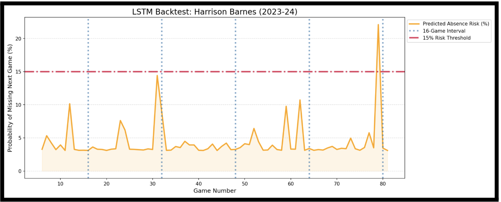
Harrison Barnes only crossed the 15% risk threshold towards the end of the season, which nowadays is inflated because coaches rest their starters either to keep them healthy for the playoffs or to evaluate their younger players who got little playing time during the regular season.
Next, let’s look at Kevin Huerter, who missed more games and only played 64 games mostly due to a season-ending injury of his left shoulder on March 18, 2024:
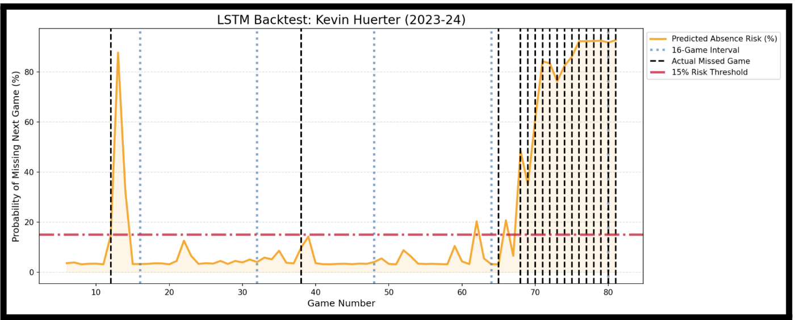
He was generally healthy for most of the season and only had a predicted risk probability spike above the 15% risk threshold at the 11th game of the season, which he sat out due to a left finger sprain.
Finally, let’s look at Trey Lyles, who only played 58 games due to a left knee injury on October 18, 2023, 6 days before the season started, and an MCL strain on March 16, 2024, a month before the season ended:
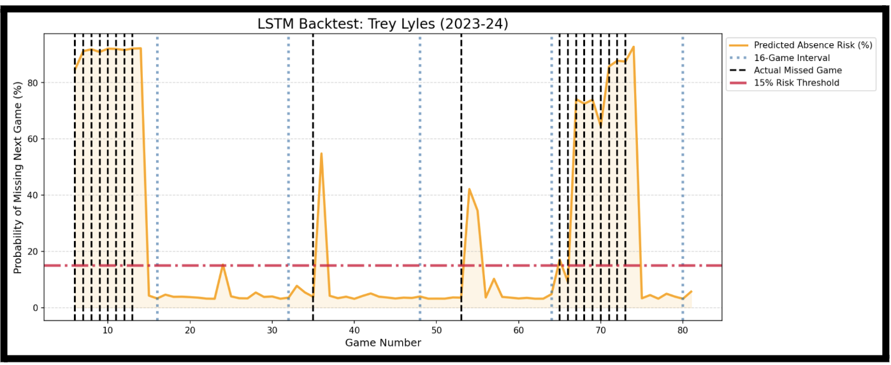
This graph shows that the model is pretty accurate with projecting the duration that an injured player like Trey Lyles misses, with the predicted absence risk dropping greatly after he returns.
To better present how well the model did its predictions with the 3 test players, let’s look at the charts below:
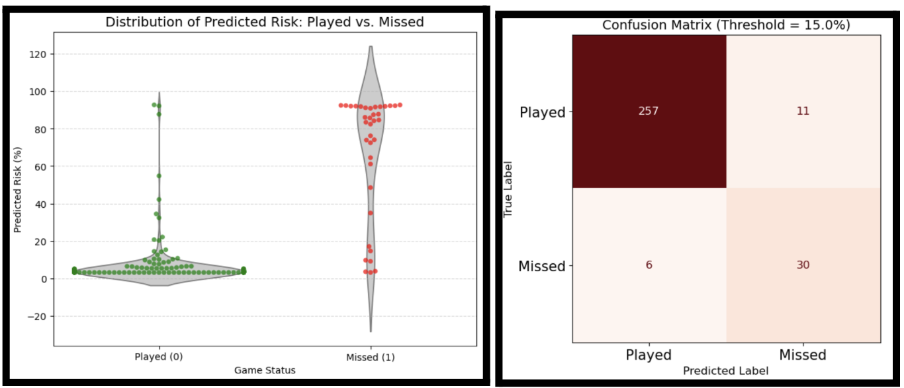
The first visualization, the violin + swarm plot, shows that the model is good at predicting a low absence risk for games that the 3 above players actually played and a high absence risk (at least higher than 15%) for games that they did miss.
The second visualization, the confusion matrix, shows that there were not many false negatives and false positives recorded. The model predicted that only 11 out of 30 (36.7%) of actual missed games were played. However, as there is a class imbalance with a majority of the dataset (268 / 304, ~88%) being games played, in the future, we could add players with more missed games to the dataset.
Backtest with Mikal Bridges
Let’s now look at the results and backtest graph for Mikal Bridges, our original test subject:
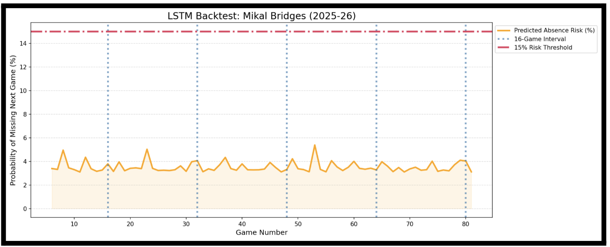
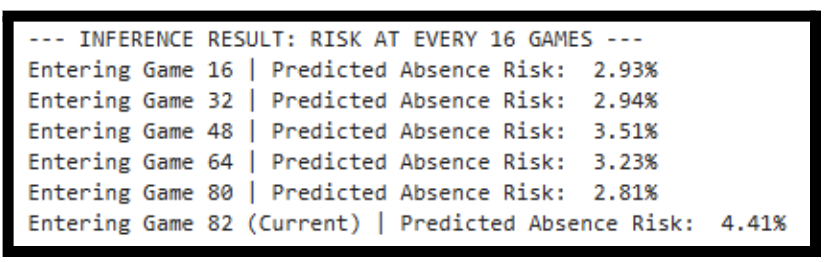
As you can see, throughout the whole 2025-26 regular season, Mikal Bridges’ predicted absence risk percentage never even got close to the dangerous 15% risk threshold. The spikes in this graph don’t even reach 6%. This really showcases his durability compared to other NBA players who played with Mike Brown as their head coach.
Conclusion
While the LSTM model that I built is not the best tool to predict how healthy an NBA player is when he plays for coach Mike Brown, partly because it doesn’t count in factors like miles run on the court or role on the court (ex. Primary ball handler, 3-and-D, Glass Cleaner), it gives good insight as to how well Mike Brown manages his players’ health while winning games.
Mikal Bridges is an anomaly. Because of load management, we will never see a player stay on the court like him, especially a 2-way player that plays many minutes and is very important to his team. Even if casual fans keep finding ways to discredit Mikal for this very impossible feat, we should appreciate his commitment to the game of basketball and showing up for his fans.